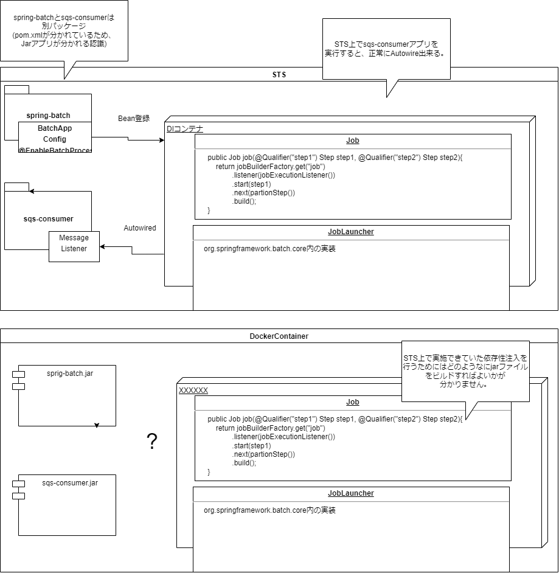
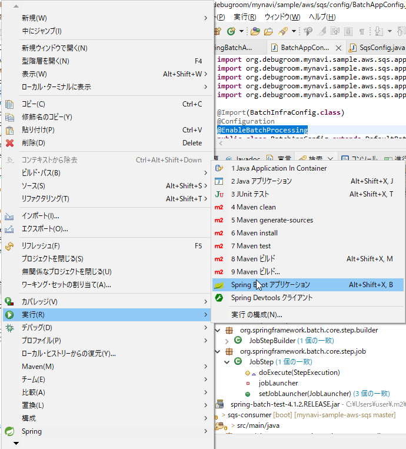

以下3つのConfigクラスを作成
| クラス名 | 役割 | ポイント |
|---|---|---|
| MvcConfig | SpringMVCの設定クラス | RestControllerを利用するため、Controllerクラスが配置されるパッケージをコ ンポーネントスキャン対象に追加する。(コードは割愛) |
| DomainConfig | サービス・インフラストラクチャレイヤの設定クラス | Repositoryクラスを利用してSQSへのメッセージングを実装するため、 このクラスでRepositoryが配置されるパッケージをコンポーネントスキャン対象とする。 （コードは割愛) |
| SqsCongif | SQSの接続を行う設定クラス |
SQSへの接続情報を定義する。AmazonSDKが提供するライブラリ(AmazonSQSASync)を利用する。
QueueMessageingTemplateクラスにAmazonSQSASyncを設定し、Bean定義する。
また、AmazonSQSASyncのEndopointConfigurationには利用するSQSキューのリージョンとエンドポイント情報を設定する。
なお、これらの情報は変更を用意するために@Valueを用いて、appplication.ymlから取得する設定とする。
|
画面操作を受け付けるコントローラクラスを実装する。コントローラクラスでは、SQSヘのメッセージ送信が実装されたSampleRepositoy
と処理結果をJSONで返却する処理を実装する。なお、sampleRepository.saveはSQSにメッセージ送信する処理である。
package org.debugroom.mynavi.sample.aws.sqs.app.web;
import org.debugroom.mynavi.sample.aws.sqs.domain.model.Sample;
import org.debugroom.mynavi.sample.aws.sqs.domain.repository.SampleRepository;
import org.springframework.beans.factory.annotation.Autowired;
import org.springframework.web.bind.annotation.GetMapping;
import org.springframework.web.bind.annotation.RequestMapping;
import org.springframework.web.bind.annotation.RestController;
@RestController
@RequestMapping("api/v1")
public class SampleRestController {
@Autowired
SampleRepository sampleRepository;
@GetMapping("/batch")
public String batch(String message){
sampleRepository.save(
Sample.builder()
.message(message)
.build()
);
return "Queue accepted.";
}
SQSへメッセージ送信するRepositoryクラスを実装する。QueueMessagingTemplate のconvertAndSendメソッドを利用して、
コントローラから渡されたメッセージを送信する。convertAndSendの第１引数にはSQSの名称を、第2引数にはmodelクラスの
プロパティ(クライアントからクエリ情報が格納されたクラス)を指定する。
package org.debugroom.mynavi.sample.aws.sqs.domain.repository;
import org.springframework.beans.factory.annotation.Autowired;
import org.springframework.cloud.aws.messaging.core.QueueMessagingTemplate;
import org.springframework.stereotype.Component;
import org.debugroom.mynavi.sample.aws.sqs.domain.model.Sample;
@Component
public class SampleRepositoryImpl implements SampleRepository{
@Autowired
QueueMessagingTemplate queueMessagingTemplate;
@Override
public void save(Sample sample) {
queueMessagingTemplate.convertAndSend("MA-saitoumsv-sqs-standard", sample.getMessage());
}
}
SQSで受信したメッセージを元にバッチ処理を実行するアプリケーションを実装する。
バッチアプリはSpringBoot+SpringBatchで構築する。基本的な構築方法は以下にまとめているため、参照。
SpringBatchサンプル
バッチ処理の実行定義を記述したConfigクラスを実装する。タスク、ジョブのメソッドを定義し、ジョブに組み込んでいくイメージで実装する。 以下に、応用的なメソッドについて記述する。
@Bean
@StepScope
@Value("#{jobExecutionContext['paramBySampleTasklet']}")
public FlatFileItemReader sampleFlatFileItemReader(String paramBySampleTasklet){
FlatFileItemReader flatFileItemReader = new FlatFileItemReader<>();
flatFileItemReader.setResource(new DefaultResourceLoader().getResource(paramBySampleTasklet));
DefaultLineMapper defaultLineMapper = new DefaultLineMapper<>();
DelimitedLineTokenizer delimitedLineTokenizer = new DelimitedLineTokenizer();
delimitedLineTokenizer.setNames("stepParam");
defaultLineMapper.setLineTokenizer(delimitedLineTokenizer);
BeanWrapperFieldSetMapper beanWrapperFieldSetMapper = new BeanWrapperFieldSetMapper<>();
beanWrapperFieldSetMapper.setTargetType(Sample.class);
defaultLineMapper.setFieldSetMapper(beanWrapperFieldSetMapper);
flatFileItemReader.setLineMapper(defaultLineMapper);
return flatFileItemReader;
@Bean
public TaskExecutor taskExecutor(){
SimpleAsyncTaskExecutor simpleAsyncTaskExecutor = new SimpleAsyncTaskExecutor();
simpleAsyncTaskExecutor.setConcurrencyLimit(10);
return simpleAsyncTaskExecutor;
}
partitionerによって
パーティション化することで、並列実行を可能にしている。パーティション化をすると、ステップの実行単位が自動的に分割され、実際に処理を行う
workerスレッドに割り当てられる。全てのworkerスレッドが処理を完了したら、マスタースレッドに通知され、次のステップに遷移する。
サンプルとしてReaderから連携されたパラメータをログに出力するバッチ処理を実装する。
同一ステップ内から連携されたパラメータはChunkContextから取得できる。
String param = stepExecution.getJobParameters().getString("param");
上記で取得したparamは、Slf4Jを利用してログ出力する。また、
Step1の出力をStep2に連携には、ExecutionContextを利用する。
ExecutionContext jobExecutionContext = stepExecution.getJobExecution().getExecutionContext()
上記で取得したパラメータはExecutionContext#putでテキストファイルに出力しておく。
jobExecutionContext.put("paramBySampleTasklet", "/test.txt");
最後に、RepeatStatusを利用して終了ステータスを設定してリターンする。
return RepeatStatus.FINISHED
package org.debugroom.mynavi.sample.aws.sqs.app.batch.step;
import org.springframework.batch.core.StepContribution;
import org.springframework.batch.core.StepExecution;
import org.springframework.batch.core.scope.context.ChunkContext;
import org.springframework.batch.core.step.tasklet.Tasklet;
import org.springframework.batch.item.ExecutionContext;
import org.springframework.batch.repeat.RepeatStatus;
import lombok.extern.slf4j.Slf4j;
@Slf4j
public class SampleTasklet implements Tasklet {
@Override
public RepeatStatus execute(StepContribution stepContribution,
ChunkContext chunkContext) throws Exception {
StepExecution stepExecution = chunkContext.getStepContext().getStepExecution();
String param = stepExecution.getJobParameters().getString("param");
log.info(this.getClass().getName() + "#execute() starteds. input param : " + param);
ExecutionContext jobExecutionContext = stepExecution.getJobExecution().getExecutionContext();
jobExecutionContext.put("paramBySampleTasklet", "/test.txt");
return RepeatStatus.FINISHED;
}
}
続いて、Step1がjobExecutionContextに設定したパラメータをインプットに動作する
Step2を実装する。まずはStep1から連携されたパラメータを読み込むReaaderを実装する。
Readerは既にBatchAppConfigクラス上で実装済みとなる。
Step1のtaskletで設定したパラメータを読み込み、インプットが記述されたテキストファイルのパスを読み込む。
flatFileItemReader.setResource(new DefaultResourceLoader().getResource(paramBySampleTasklet));
諸々のファイル読み込み設定(区切り文字設定など)を行ったのち、読み込んだ値をモデルクラスにマッピングする。
beanWrapperFieldSetMapper.setTargetType(Sample.class);
モデルクラス(Sampleクラス)側には変数stepParamが定義されており、以下の記述でこれにマッピングしている。
delimitedLineTokenizer.setNames("stepParam");
@Bean
@StepScope
@Value("#{jobExecutionContext['paramBySampleTasklet']}")
public FlatFileItemReader sampleFlatFileItemReader(String paramBySampleTasklet){
FlatFileItemReader flatFileItemReader = new FlatFileItemReader<>();
flatFileItemReader.setResource(new DefaultResourceLoader().getResource(paramBySampleTasklet));
DefaultLineMapper defaultLineMapper = new DefaultLineMapper<>();
DelimitedLineTokenizer delimitedLineTokenizer = new DelimitedLineTokenizer();
delimitedLineTokenizer.setNames("stepParam");
defaultLineMapper.setLineTokenizer(delimitedLineTokenizer);
BeanWrapperFieldSetMapper beanWrapperFieldSetMapper = new BeanWrapperFieldSetMapper<>();
beanWrapperFieldSetMapper.setTargetType(Sample.class);
defaultLineMapper.setFieldSetMapper(beanWrapperFieldSetMapper);
flatFileItemReader.setLineMapper(defaultLineMapper);
return flatFileItemReader;
}
このあと、Readerで読み込んだ値を加工するProessorクラスやDBなどに書き込むWriteクラスを実装するがその前に、これらのクラスはパーティション化することで
並列実行するため、Partitionaerクラスの実装が必要となる。パーティション化の宣言自体はBatchAppConfigで実装済みだが、Processorクラス上では、
並列実行させるスレッド数に応じたパーティションIDの作成や、パーティションIDとIDの値をExecutionContext#putString
に設定し、スレッドを識別する文字列とExecutionContextをペアでMapに設定して返却する処理を実装しなければならない。
まずはMapを以下の通り作成する。型にString(パーティションID)とExectutionContextを設定したMapインスタンスを作成する。
Map
次に、while分で読み込む入力値をバッファに設定する。
InputStream inputStream = getClass().getResourceAsStream(param);
Reader reader = new InputStreamReader(inputStream);
BufferedReader bufferedReader = new BufferedReader(reader);)
読み込んだ入力値が空になるまでwhile分を回し、各入力値にパーティションIDを付与する。
これにより、各workerスレッドが処理するパーティションIDが設定され、並列処理が可能となる。
String readLine;
int index = 0;
while ((readLine = bufferedReader.readLine()) != null){
ExecutionContext executionContext = new ExecutionContext();
executionContext.putString("partitionId", readLine);
executionContextMap.put("partition" + index, executionContext);
index++;
}
Processorクラスでは、stepExecutionからReaderが設定した入力値を読み込み、ログ出力する処理を記述する。
サンプルとして、モデルクラスのgetStepParamの値とPartitionIDが一致し場合にログ出力を行う処理を実装した。
@Value("#{stepExecution}")
private StepExecution stepExecution;
@Override
public Sample process(Sample sample) throws Exception {
ExecutionContext stepExecutionContext = stepExecution.getExecutionContext();
ExecutionContext jobExecutionContext =
stepExecution.getJobExecution().getExecutionContext();
if(Objects.equals(sample.getStepParam(), stepExecutionContext.get("partitionId"))){
log.info(this.getClass().getName()
+ " started. sample.stepParam:" + sample.getStepParam()
+ " stepExecution.partitionId:" + stepExecutionContext.getString("partitionId"));
}
return sample;
Processorクラスとほぼ同じような内容を実装している。
samples.stream()
.filter(sample -> Objects.equals(((Sample) sample).getStepParam(), stepExecutionContext.get("partitionId")))
.forEach(sample -> {
log.info(this.getClass().getName() + " sample.stepParam:" + ((Sample) sample).getStepParam());
});
stepExecutionContext.put("status", "complete!");
SpringBatchアプリケーションを呼び出すConsumerアプリケーションを実装する。 このアプリケーションは、SQSでメッセージをポーリングして取得し、取得値を元にSpringBatchアプリケーションを実行する。
SQSに接続するための設定を定義したSqsConfigクラスを実装する。実装方法はProducerアプリケーションで作成したものと同様。
続いて、SQSへのポーリングを実行するlisterクラスを実装する。
クラスに@EnableSqsを付与することで、SQSへのアクセスが可能となる。
また、SQSからメッセージを取得した後にSpringBatchアプリケーションを実行する処理に以下を
付与することでSQSポーリングが有効化される。
@SqsListener(value = "MA-saitoumsv-sqs-standard", deletionPolicy = SqsMessageDeletionPolicy.ON_SUCCESS)
(2022/1/16 コメント)
consumerアプリのSQSリスナーからspring-batchアプリケーションで実装したJobを実行できる仕組みが理解出来ていない。
consumerアプリのMessageListnerクラス側でインジェクションしたJobインスタンスをJobLauncherに渡して、SpringBatchを実行していることは理解できるが、
なぜ、spring-batchアプリ側の別パッケージで定義したJobインスタンスがBean登録出来ているかが分からない。
SpringBatchのリファレンス上も、別パッケージのJobインスタンスを自動でBean登録するような記載はない。
(JobLauncherが@EnableBatchProcessingにより自動でBean登録される記載はあるのでこのあたりが関係している？)
docker build sqs-producer/ -t yushin1402/aws-cloudnative-sqsapp-producer:latest --no-cache
（※)何度かビルドすると、キャッシュがたまる。キャッシュを利用すると、アプリケーションの変更がイメージに反映されない場合がある。
この場合は上記の通り、--no-chacheオプションで、キャッシュを利用しないでビルドする必要がある。
アプリに変更を加えたにも関わらず、各ビルドステップで「Layer already exists」と出力された場合はイメージに変更出来ていない可能性が高い。
実際に変更が反映されたかを確認したい場合は以下コマンドでコンテナにログインする。
docker run -d -p 1080:8080 yushin1402/aws-cloudnative-sqsapp-producer:latest java -jar -Dspring.profiles.active=dev /usr/local/aws-cloudnative-sqsapp/sqs-producer/target/sqs-producer-0.0.1-SNAPSHOT.jar
docker exec -it fb79902a8ae4 /bin/bash
STSのMavenビルドで実行する。作成したJarファイルは、Consumerアプリのプロジェクトルート/lib/にコピーしておく。(このパスをConsumerアプリのpom.xmlで指定する。)
ConsumerアプリのプロジェクトをMavenクリーンした際に作成したSpringBatchアプリのライブラリをインストールした上で依存関係を解決するよう、設定を記述する。
[Dependancy]
<dependency>
<groupId>org.debugroom</groupId>
<artifactId>spring-batch</artifactId>
<version>0.0.1-SNAPSHOT</version>
</dependency>
<plugin>
<groupId>org.apache.maven.plugins</groupId>
<artifactId>maven-install-plugin</artifactId>
<executions>
<execution>
<id>install-external</id>
<phase>clean</phase>
<configuration>
<file>${basedir}/lib/spring-batch-0.0.1-SNAPSHOT.jar</file>
<repositoryLayout>default</repositoryLayout>
<groupId>org.debugroom</groupId>
<artifactId>spring-batch</artifactId>
<version>0.0.1-SNAPSHOT</version>
<packaging>jar</packaging>
<generatePom>true</generatePom>
</configuration>
<goals>
<goal>install-file</goal>
</goals>
</execution>
</executions>
</plugin>
上記の通り、spring-batchのjarをライブラリとしてsqs-consumerに取り込もうとしたが、 spring-batchのjarはspring-bootとして起動させることが前提の実行可能jarであり、ライブラリとして上手く認識されなかった。 他のjarライブラリと比較しても中身の構成が明らかに違う。
sqs-consumerアプリをビルドして、ECSにデプロイしたところ、次のようなエラーとなってはまっています。
***************************
APPLICATION FAILED TO START
***************************
Description:
Field jobLauncher in org.debugroom.mynavi.sample.aws.sqs.app.listener.MessageListener required a bean of type 'org.springframework.batch.core.launch.JobLauncher' that could not be found.
The injection point has the following annotations:
- @org.springframework.beans.factory.annotation.Autowired(required=true)
Action:
Consider defining a bean of type 'org.springframework.batch.core.launch.JobLauncher' in your configuration.
本件について、sqs-consumerアプリをどのようにビルドすれば良いか、教えていただけないでしょうか。
以下の図のようなイメージをしていますが、コンテナ上にデプロイするjarファイル内でsqs-consumerとspring-batchアプリの
依存関係をどのように解決すればよいか、分からずはまってしまっている状況です。
ビルドに利用しているpom.xmlとDockerfileは以下にアップロードしています。
https://github.com/yushin1402/aws-cloudnative-sqsapp/tree/master/sqs-consumer
[正常終了しているSTS上でのアプリケーション実行の動作イメージ(斎藤の理解)]

[調査状況]
STS上では以下の通り、正常にアプリケーションの実行が出来ています。
[実行結果]
. ____ _ __ _ _
/\\ / ___'_ __ _ _(_)_ __ __ _ \ \ \ \
( ( )\___ | '_ | '_| | '_ \/ _` | \ \ \ \
\\/ ___)| |_)| | | | | || (_| | ) ) ) )
' |____| .__|_| |_|_| |_\__, | / / / /
=========|_|==============|___/=/_/_/_/
[32m :: Spring Boot :: [39m [2m (v2.1.7.RELEASE)[0;39m
[36mo.d.mynavi.sample.aws.sqs.config.App [0;39m [2m:[0;39m Starting App on DESKTOP-VU8QFTR with PID 13568 (C:\study\AWS\mynavi-sample-aws-sqs\sqs-consumer\target\classes started by user in C:\study\AWS\mynavi-sample-aws-sqs\sqs-consumer)
[36mo.d.mynavi.sample.aws.sqs.config.App [0;39m [2m:[0;39m The following profiles are active: dev
[36mtrationDelegate$BeanPostProcessorChecker[0;39m [2m:[0;39m Bean 'credentialsProvider' of type [org.springframework.cloud.aws.core.credentials.CredentialsProviderFactoryBean] is not eligible for getting processed by all BeanPostProcessors (for example: not eligible for auto-proxying)
[36mtrationDelegate$BeanPostProcessorChecker[0;39m [2m:[0;39m Bean 'credentialsProvider' of type [com.amazonaws.auth.DefaultAWSCredentialsProviderChain] is not eligible for getting processed by all BeanPostProcessors (for example: not eligible for auto-proxying)
[36mo.s.j.d.e.EmbeddedDatabaseFactory [0;39m [2m:[0;39m Starting embedded database: url='jdbc:h2:mem:testdb;DB_CLOSE_DELAY=-1;DB_CLOSE_ON_EXIT=false', username='sa'
[36mo.s.b.c.c.a.DefaultBatchConfigurer [0;39m [2m:[0;39m No transaction manager was provided, using a DataSourceTransactionManager
[36mo.s.b.c.r.s.JobRepositoryFactoryBean [0;39m [2m:[0;39m No database type set, using meta data indicating: H2
[36mo.s.b.c.l.support.SimpleJobLauncher [0;39m [2m:[0;39m No TaskExecutor has been set, defaulting to synchronous executor.
[36mo.s.b.c.l.AbstractListenerFactoryBean [0;39m [2m:[0;39m org.springframework.batch.item.ItemWriter is an interface. The implementing class will not be queried for annotation based listener configurations. If using @StepScope on a @Bean method, be sure to return the implementing class so listener annotations can be used.
[36mo.s.b.c.l.AbstractListenerFactoryBean [0;39m [2m:[0;39m org.springframework.batch.item.ItemProcessor is an interface. The implementing class will not be queried for annotation based listener configurations. If using @StepScope on a @Bean method, be sure to return the implementing class so listener annotations can be used.
[36mo.s.s.concurrent.ThreadPoolTaskExecutor [0;39m [2m:[0;39m Initializing ExecutorService
[36mo.d.mynavi.sample.aws.sqs.config.App [0;39m [2m:[0;39m Started App in 6.869 seconds (JVM running for 8.021)
一方で、ビルドしたjarファイルをjavaコマンドで直接実行すると、以下のようなエラーとなります。 コンテナ上で出力されているエラーとはまた別のエラーです。
c:\study\AWS\mynavi-sample-aws-sqs\sqs-consumer\target>java -jar sqs-consumer-0.0.1-SNAPSHOT.jar
. ____ _ __ _ _
/\\ / ___'_ __ _ _(_)_ __ __ _ \ \ \ \
( ( )\___ | '_ | '_| | '_ \/ _` | \ \ \ \
\\/ ___)| |_)| | | | | || (_| | ) ) ) )
' |____| .__|_| |_|_| |_\__, | / / / /
=========|_|==============|___/=/_/_/_/
:: Spring Boot :: (v2.1.7.RELEASE)
2022-01-24 00:16:37.572 INFO 13328 --- [ main] o.d.mynavi.sample.aws.sqs.config.App : Starting App v0.0.1-SNAPSHOT on DESKTOP-VU8QFTR with PID 13328 (C:\study\AWS\mynavi-sample-aws-sqs\sqs-consumer\target\sqs-consumer-0.0.1-SNAPSHOT.jar started by user in c:\study\AWS\mynavi-sample-aws-sqs\sqs-consumer\target)
2022-01-24 00:16:37.575 INFO 13328 --- [ main] o.d.mynavi.sample.aws.sqs.config.App : The following profiles are active: dev
2022-01-24 00:16:43.069 WARN 13328 --- [ main] s.c.a.AnnotationConfigApplicationContext : Exception encountered during context initialization - cancelling refresh attempt: org.springframework.beans.factory.BeanCreationException: Error creating bean with name 'messageListener': Lookup method resolution failed; nested exception is java.lang.IllegalStateException: Failed to introspect Class [org.debugroom.mynavi.sample.aws.sqs.app.listener.MessageListener] from ClassLoader [org.springframework.boot.loader.LaunchedURLClassLoader@1698c449]
2022-01-24 00:16:43.088 INFO 13328 --- [ main] ConditionEvaluationReportLoggingListener :
Error starting ApplicationContext. To display the conditions report re-run your application with 'debug' enabled.
2022-01-24 00:16:43.100 ERROR 13328 --- [ main] o.s.boot.SpringApplication : Application run failed
org.springframework.beans.factory.BeanCreationException: Error creating bean with name 'messageListener': Lookup method resolution failed; nested exception is java.lang.IllegalStateException: Failed to introspect Class [org.debugroom.mynavi.sample.aws.sqs.app.listener.MessageListener] from ClassLoader [org.springframework.boot.loader.LaunchedURLClassLoader@1698c449]
at org.springframework.beans.factory.annotation.AutowiredAnnotationBeanPostProcessor.determineCandidateConstructors(AutowiredAnnotationBeanPostProcessor.java:265) ~[spring-beans-5.1.9.RELEASE.jar!/:5.1.9.RELEASE]
at org.springframework.beans.factory.support.AbstractAutowireCapableBeanFactory.determineConstructorsFromBeanPostProcessors(AbstractAutowireCapableBeanFactory.java:1269) ~[spring-beans-5.1.9.RELEASE.jar!/:5.1.9.RELEASE]
at org.springframework.beans.factory.support.AbstractAutowireCapableBeanFactory.createBeanInstance(AbstractAutowireCapableBeanFactory.java:1184) ~[spring-beans-5.1.9.RELEASE.jar!/:5.1.9.RELEASE]
at org.springframework.beans.factory.support.AbstractAutowireCapableBeanFactory.doCreateBean(AbstractAutowireCapableBeanFactory.java:555) ~[spring-beans-5.1.9.RELEASE.jar!/:5.1.9.RELEASE]
at org.springframework.beans.factory.support.AbstractAutowireCapableBeanFactory.createBean(AbstractAutowireCapableBeanFactory.java:515) ~[spring-beans-5.1.9.RELEASE.jar!/:5.1.9.RELEASE]
at org.springframework.beans.factory.support.AbstractBeanFactory.lambda$doGetBean$0(AbstractBeanFactory.java:320) ~[spring-beans-5.1.9.RELEASE.jar!/:5.1.9.RELEASE]
at org.springframework.beans.factory.support.DefaultSingletonBeanRegistry.getSingleton(DefaultSingletonBeanRegistry.java:222) ~[spring-beans-5.1.9.RELEASE.jar!/:5.1.9.RELEASE]
at org.springframework.beans.factory.support.AbstractBeanFactory.doGetBean(AbstractBeanFactory.java:318) ~[spring-beans-5.1.9.RELEASE.jar!/:5.1.9.RELEASE]
at org.springframework.beans.factory.support.AbstractBeanFactory.getBean(AbstractBeanFactory.java:199) ~[spring-beans-5.1.9.RELEASE.jar!/:5.1.9.RELEASE]
at org.springframework.beans.factory.support.DefaultListableBeanFactory.preInstantiateSingletons(DefaultListableBeanFactory.java:845) ~[spring-beans-5.1.9.RELEASE.jar!/:5.1.9.RELEASE]
at org.springframework.context.support.AbstractApplicationContext.finishBeanFactoryInitialization(AbstractApplicationContext.java:877) ~[spring-context-5.1.9.RELEASE.jar!/:5.1.9.RELEASE]
at org.springframework.context.support.AbstractApplicationContext.refresh(AbstractApplicationContext.java:549) ~[spring-context-5.1.9.RELEASE.jar!/:5.1.9.RELEASE]
at org.springframework.boot.SpringApplication.refresh(SpringApplication.java:743) ~[spring-boot-2.1.7.RELEASE.jar!/:2.1.7.RELEASE]
at org.springframework.boot.SpringApplication.refreshContext(SpringApplication.java:390) ~[spring-boot-2.1.7.RELEASE.jar!/:2.1.7.RELEASE]
at org.springframework.boot.SpringApplication.run(SpringApplication.java:312) ~[spring-boot-2.1.7.RELEASE.jar!/:2.1.7.RELEASE]
at org.springframework.boot.SpringApplication.run(SpringApplication.java:1214) ~[spring-boot-2.1.7.RELEASE.jar!/:2.1.7.RELEASE]
at org.springframework.boot.SpringApplication.run(SpringApplication.java:1203) ~[spring-boot-2.1.7.RELEASE.jar!/:2.1.7.RELEASE]
at org.debugroom.mynavi.sample.aws.sqs.config.App.main(App.java:10) ~[classes!/:0.0.1-SNAPSHOT]
at java.base/jdk.internal.reflect.NativeMethodAccessorImpl.invoke0(Native Method) ~[na:na]
at java.base/jdk.internal.reflect.NativeMethodAccessorImpl.invoke(NativeMethodAccessorImpl.java:62) ~[na:na]
at java.base/jdk.internal.reflect.DelegatingMethodAccessorImpl.invoke(DelegatingMethodAccessorImpl.java:43) ~[na:na]
at java.base/java.lang.reflect.Method.invoke(Method.java:564) ~[na:na]
at org.springframework.boot.loader.MainMethodRunner.run(MainMethodRunner.java:48) ~[sqs-consumer-0.0.1-SNAPSHOT.jar:0.0.1-SNAPSHOT]
at org.springframework.boot.loader.Launcher.launch(Launcher.java:87) ~[sqs-consumer-0.0.1-SNAPSHOT.jar:0.0.1-SNAPSHOT]
at org.springframework.boot.loader.Launcher.launch(Launcher.java:51) ~[sqs-consumer-0.0.1-SNAPSHOT.jar:0.0.1-SNAPSHOT]
at org.springframework.boot.loader.JarLauncher.main(JarLauncher.java:52) ~[sqs-consumer-0.0.1-SNAPSHOT.jar:0.0.1-SNAPSHOT]
Caused by: java.lang.IllegalStateException: Failed to introspect Class [org.debugroom.mynavi.sample.aws.sqs.app.listener.MessageListener] from ClassLoader [org.springframework.boot.loader.LaunchedURLClassLoader@1698c449]
at org.springframework.util.ReflectionUtils.getDeclaredMethods(ReflectionUtils.java:507) ~[spring-core-5.1.9.RELEASE.jar!/:5.1.9.RELEASE]
at org.springframework.util.ReflectionUtils.doWithMethods(ReflectionUtils.java:404) ~[spring-core-5.1.9.RELEASE.jar!/:5.1.9.RELEASE]
at org.springframework.util.ReflectionUtils.doWithMethods(ReflectionUtils.java:389) ~[spring-core-5.1.9.RELEASE.jar!/:5.1.9.RELEASE]
at org.springframework.beans.factory.annotation.AutowiredAnnotationBeanPostProcessor.determineCandidateConstructors(AutowiredAnnotationBeanPostProcessor.java:248) ~[spring-beans-5.1.9.RELEASE.jar!/:5.1.9.RELEASE]
... 25 common frames omitted
Caused by: java.lang.NoClassDefFoundError: org/springframework/batch/core/repository/JobExecutionAlreadyRunningException
at java.base/java.lang.Class.getDeclaredMethods0(Native Method) ~[na:na]
at java.base/java.lang.Class.privateGetDeclaredMethods(Class.java:3244) ~[na:na]
at java.base/java.lang.Class.getDeclaredMethods(Class.java:2387) ~[na:na]
at org.springframework.util.ReflectionUtils.getDeclaredMethods(ReflectionUtils.java:489) ~[spring-core-5.1.9.RELEASE.jar!/:5.1.9.RELEASE]
... 28 common frames omitted
Caused by: java.lang.ClassNotFoundException: org.springframework.batch.core.repository.JobExecutionAlreadyRunningException
at java.base/java.net.URLClassLoader.findClass(URLClassLoader.java:435) ~[na:na]
at java.base/java.lang.ClassLoader.loadClass(ClassLoader.java:589) ~[na:na]
at org.springframework.boot.loader.LaunchedURLClassLoader.loadClass(LaunchedURLClassLoader.java:93) ~[sqs-consumer-0.0.1-SNAPSHOT.jar:0.0.1-SNAPSHOT]
at java.base/java.lang.ClassLoader.loadClass(ClassLoader.java:522) ~[na:na]
... 32 common frames omitted